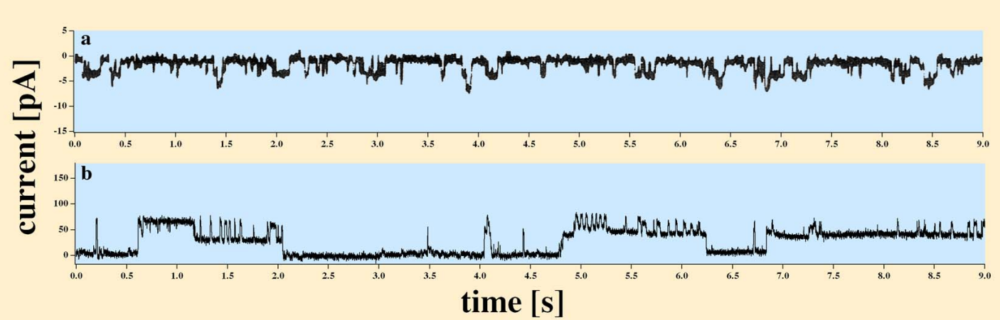

1.3.1 Concepts of the play
Quotation:
”Breaking down topics into digestible chunks and explaining them helps you identify gaps in your knowledge. This creates new neural pathways in your brain, which makes connecting ideas and concepts easier.”
R.P.Feynman
In this section – in the spirit of Johnston and Wu [61] – we review how the relevant significant components, actors and actions of a single neuron follow the ’basic principles’. Textbooks usually skip how the neuron, a piece of living material, is modeled. Instead, they put behind their formulas (unfortunately, referring to HH), without validating them for biology, the picture taken from classical physics, which was validated for different circumstances (non-living matter) in a classical disciplinary concept. HH seem to be one of the rare exceptions, also in the context that they admit that the ’interpretation given is unlikely to provide a correct picture of the membrane’, furthermore that ’physical theory of this kind does not lead to satisfactory functions … without further ad hoc assumptions’ [48]. Their followers introduced further ad-hoc assumptions, needed to provide satisfactory agreement with the experimental evidence, into their admittedly wrong physical picture. Those models assume that the circuits comprise point-like ideal discrete elements such as condensers and resistors, and some mystic power changes their parameters; furthermore, ideal batteries with a voltage that, again, may change their voltage. All of them are connected by conducting (metallic) ideal wires, and their interaction speed is infinitely high (the Newtonian ’instant interaction’). That approach leads to the ’electrotonic model’ [90], which is half-century old. It was question marked whether they can be realistic [4] at all. That abstract model enables them to use the well-known classic equations named after Ohm, Kirchoff, Coulomb, Maxwell, and others. However, those abstractions have severe limitations when applied to living material; moreover, they mislead research in some aspects. It could be useful in its time of discovery, at a very elementary level, but it surely cannot describe the details discovered during the past half century.
We provide a ”birds’ eye view” of our model’s operation. We must refer back to the need of the zigzag discussion. We introduce our fundamental terms and notions in a way that we assume the audience has at least a fundamental knowledge of the subject. We refer to the corresponding sections, discussing the physics that establishes them, and the sections which, in terms of ”abstract physiology” (without biological details), provide more details.
When describing neuronal operation, we start with the point: ”neurons are sites where information is handled in analog rather than digital form. There may be hundreds of excitatory nerve endings on the surface of one postsynaptic cell. Each terminal is capable of secreting the excitatory (or inhibitory) chemical. The rate of secretion is governed by the rate of arrival of presynaptic impulses. True, each impulse in one terminal liberates a definite amount of transmitter, but there may be many impulses in many such terminals. The postsynaptic depolarization that ensues is essentially a continuously gradeable process. The membrane potential of a neuron waxes and wanes with the ceaseless variations of excitatory and inhibitory input, and with it varies the stream of impulses issued in its axon. The digital pulse code of presynaptic fibers is thus converted into an analog process at the junction, only to be reconverted into a digital pulse code again in the axon of the postsynaptic cell. The logical operations are all performed in the analog mode at the synapses.” [106] We emphasize that all processes are slow (in the sense that they have well-observable time course as opposed with sudden changes and ’non-ordinary’ laws of science describe them), furthermore, that neurons exist only in their dynamic way; their static discussion is misleading. Note that those ”ceaseless variations” can be correctly handled by our dynamic methods.
Following the path to understanding neural functionality (mainly: the brain and life in general) involves creating the necessary microbiological components, their elementary functions (physical function, stimulus processing, cooperation, and reproduction), and their higher-level cooperation (networks). The overview of the entire operation requires not only a multitude of scientific disciplines but also their cooperation and periodic coordination (reconciliation) of their approaches. A fundamental aspect is the precise description of the temporal behavior [119] of the participating processes (very slow compared to the interaction speeds usual in physics), for which the laws derived from generally used physical approaches are not suitable (their use produces misleading results) - almost the same holds also for technical computing. Computing science is still based on the principles laid down by von Neumann [EDVACreport1945]. However, the technology in the meantime has reversed the ratio of transfer and processing times, so the theory is used far outside its range of validity. Since approximately 2000, the theoretical description has become increasingly inadequate for actual computing technology [131], particularly for computing accelerators and networked solutions, as it overlooks Feynman’s warning [FeynmanComputation:2018] that computers belong to the engineering field rather than mathematics. The finite speed of interaction (data transmission) becomes increasingly important as the operating speed increases. It enforces technical limitations [127, 131] on the performance of supercomputers [123] and neural networks [118] (whether biology-imitating or technical ones); their performance strongly decays as the system’s size increases. The technical solutions inherited from the single-processor age, combined with the non-time-aware viewpoint of their theories in both computing and biology [131], prevent the correct discussion, and even more, combining them, whether attempting to imitate one with the other (biomorphic architectures, brain simulation, or artificial intelligence) or combining them (brain-computer interfaces). We aim to continue researching ways to improve cooperation between these disciplines by analyzing their features theoretically and simulating them.
The scene
Although we attempt to be as much abstract as possible, we must stick to the necessary measure to the biological background. The scene where the events we discuss happen are mainly the surface of the neuronal membrane (see Figure 1.1) and the different kinds of permeable points (ion channels, see Figure 1.2). The membrane separates two electrolyte segments of solved salts with different composition and concentration; our abstract view is shown in Fig. 2.12. The salt molecules, individually, are entirely separated charges or dipoles with fractional changes, and they appear in many roles in the show. As shown, the membrane is not a plain thick surface and simple holes embedded into it, but in our first approximation we describe the phenomena by considering them in such a simple way. We refine the description and describe the modification due to being at the boundary of discrete and continuous electricities in section 2.6.5 and leave discussing the biological details for the cited references.

We do not discuss the features of the lipid bilayer, just note that the lipid chains have a a polar structure: the negative end is oriented to the center of the cell while the positive end extends out to the periphery [64] page 74. This feature establishes the electric behaviour of the membrane in electrolytes, as we describe in section 2.6. The freely moving ions are attracted to the surfaces and the layers they form represent a condenser. Given the elasticity of the membrane, furthermore, the repulsion between the charge carriers, both the electrical and the wave-like mechanical changes during AP generation follow.
The membranes can form (in our picture) an almost flat surface (which actually is the surface of a sphere-like object or a cylinder). When we discuss a membrane, we consider it to be a perfect isolator and discuss the ion channels in its wall (which enable electric connection between the two segments on its two sides). The membrane’s processes can so far only be described in an incomplete manner. [43]

Notice that the ion absorption on the surfaces generates an inhomogeneity in the electrolytes in proximity to the surface. These dynamic electrolyte layers represent a new color on the palette. Those ions (due to electric and thermodynamic forces) are fixed on the surfaces (as entirely separated charges) in resting state and (in polarized state) are present in the electrolytes on its two sides. In the resting state, we consider that dynamically balanced state at one level as a kind of PID controller. We describe also the transient state of the controller when an intense inward current pulse triggers an outward current pulse.
The actors
One must distinguish static actors that are permanently on the scene and dynamic ones that appear only for a period.
Slow current
We explicitly introduce the notion of ’slow current’, in the sense discussed in sections 2.4 and 2.2.5. We omit non-significant interactions, and restrict our discussion to interaction speed pairs, where we use the idea of classical physics’s approximation that the higher interaction speed is ’instant’ and we work out the mathematics for accounting the lower interaction’s speed. In our approximation, we work with speed pairs such as diffusion vs voltage-assisted speeds, or voltage-assisted vs voltage-accelerated speeds. This classification usually coincides with the one that the ionic current flows under the effect of fellow charges in the same media or another object (external or charged-up due to electrodiffusional reasons). The physical difference is whether the movement of ions is assisted by an enormous potential gradient connected to some object (they move in an electrically homogeous medium without external driving force, for example, between the extra- and intracellular regions when passing the ion channels; a (’fast’ macroscopic current) or they move under the local potential in the electrolyte (for example, in the layer proximal to the isolating membrane) assisted by the electrostatic repulsion of ions in the same layer (’slow’ macroscopic current). Cardiac slow currents (current pulses of duration in several msecs range) [88] have been discovered, and their speed [23] was found in the range . In neurophysiology, similarly, ion current speeds ranging from a few to dozens of has been observed. The size relations in neuronal systems are discussed in section 3.2.1.
We explicitly consider that ”slow” currents implement the functionality and we also name which activity why does need time. When describing neuronal processes, we use neuron’s ”local time” that begins when in the computing cycle the first synaptic input arrives or when the network synchronizes it as described in section 1.3.5. We discuss the (still abstract) operation details in section 3.6. Fig. 1.6 shows a schematic AP, with connected characteristic points, and nearly realistic figures of the ”local time” values on the axis, and the ordinates, and abscissas of the characteristic points. The figure shows the result of a numeric simulation using our current Post-Synaptic Potential (PSP) model, see Chapter 8. See also Fig. 3.9 (notice that the time scale is logarithmic), where results of using our physical model are depicted.
Ion channels

The ion channels are very important players, in most processes. Their operation (their current delivering capacity, operating principles, ion selectivity, etc.) is a source of misunderstandings. They heavily cooperate with the membrane and the proximal layers on its two surfaces.
Charged layers
The membrane is considered as a condenser, where charges with opposite signs on the two sides of the membrane are located. The charges are located in a very thin () layer where most of the discussed electric phenomena happen. The attraction between the ions on the opposite sides acts in a way that a ’virtual charged sheet’ is created: the electric field keeps the ions in place in the direction perpendicular to the surface while in parallel with the surface the ions can move as the thermodynamic gradient dictates. The operation of charged layers is underpinned by Fig. 1.3: whether natural or synthetic, the actual voltage gradient defines the opening/closing of the channels.
Driving forces
A crucial point of our description is that the ions move under the effect of combined thermodynamic and electrical gradients. These two cannot be separated and the ions will move if any of the two gradients are present, given that they generate the other gradient. After derividing the ”equivalent thermodynamic electrical gradient”, we refer to the sum of the two gradients as ”thermoelectric gradient”.